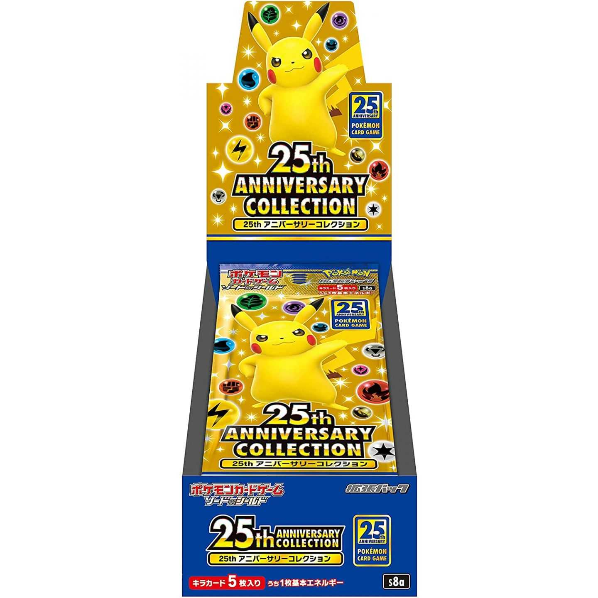
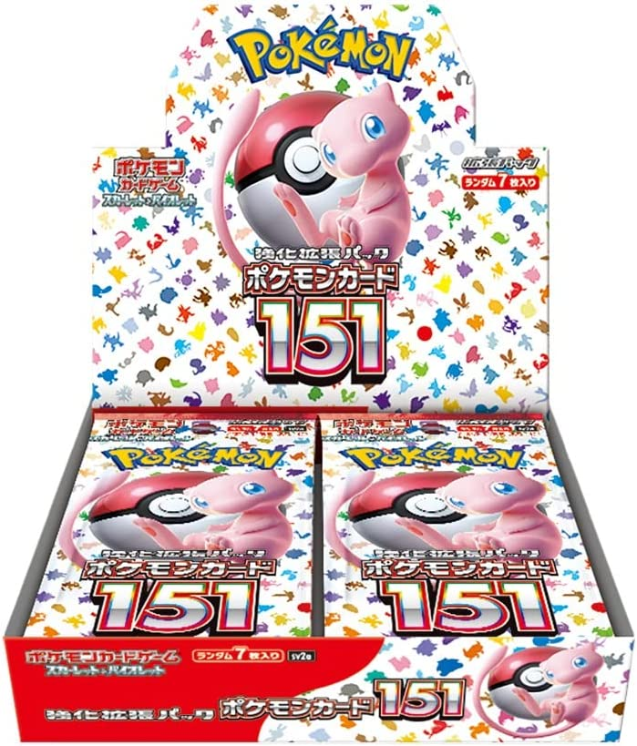

人気商品が発売されるたびに「受注生産にしてほしい」という声がSNSで広がります。欲しい人全員に届けられるなら、それが一番公平に思えます。しかし実際には、受注生産はメーカー側にとって想像以上に難しい選択です。この記事では、ユーザー目線とメーカー目線のギャップを整理しながら、なぜ受注生産が簡単にできないのかを解説します。
受注生産は「需要を100%満たせる夢の方法」ではなく、生産・物流・品質管理・年間スケジュールに大きな負荷をかける手段です。ポケカのような継続的に新商品を出すビジネスでは、特に難しい選択肢になります。
受注生産が難しい5つの理由
Reason 01
生産ラインには限界がある
カードは印刷して終わりではありません。印刷・裁断・加工・パック詰め・箱詰め・配送まで全工程が必要です。予想10万個の商品に50万件の受注が来ても、生産ラインを5倍にすることはできません。設備・人員・工場のキャパはすぐには変えられないのです。
Reason 02
他の商品が作れなくなる
人気商品の受注を大量に抱えると、その生産ラインを長期間占有します。ポケカは毎月のように新弾・構築済みデッキ・周辺グッズが発売されます。1つの商品のために生産を止めると、他の全商品の供給に影響が出ます。メーカーにとっては「1商品で100億円」より「年間を通じて全商品を安定供給する」方が重要です。
Reason 03
資材調達が難しくなる
通常販売なら「10万個作る」と決めて資材を調達できます。受注生産だと注文数が確定するまで、箱・フィルム・説明書・外装などを準備できません。大量発注になれば資材メーカー側の生産も追いつかない可能性があります。
Reason 04
受注生産でも転売はなくならない
受注生産にすれば転売が消えると思われがちですが、実際には受注期間が短かったり注文上限があったりすると転売は発生します。


実際の例
25th ANNIVERSARY COLLECTIONやポケモンカード151は、いずれも過去に受注形式で販売された商品です。しかし現在もどちらも高値で取引されており、受注販売が転売対策の完全な解決策にはならないことを示す代表例と言えます。
Reason 05
大量受注はむしろリスクになる
100万件受注できたとしても、メーカーにとっては「100万件分の利益」ではなく「100万件分の生産・物流・サポート・品質管理の巨大プロジェクト」です。1%の問い合わせでも1万件。0.1%の不良率でも1000件の対応が必要になります。発送まで半年〜1年以上かかれば、クレームやキャンセル対応も膨大になります。
ユーザーとメーカーの見え方の違い
ユーザー目線
欲しい人全員が買えるようにしてほしい。注文が100万件来たなら全部作って売ればいい。受注生産にすれば転売もなくなるはず。
メーカー目線
生産ラインは有限。1商品に集中すると他の商品が止まる。年間スケジュール全体を安定させることが最優先。大量受注は利益より負荷が大きい場合もある。
では実際にどうしているのか
メーカーが現実的に取れる選択肢は「受注か通常販売か」の二択ではありません。複数の手法を組み合わせて需要を少しずつ吸収しています。
- まず最大生産で通常販売（作れるだけ作って市場に流す）
- 抽選販売（需要が高い場合に公平性を担保）
- 再販（需要を見ながら追加生産）
- 後日受注（需要量が把握できてから限定的に受付）
ポケカは「作った分はほぼ売れる・在庫リスクが小さい・再販もしやすい」という特徴があります。そのため「まずラインを限界まで回して供給し、足りなければ追加生産する」方式は合理的な判断です。
受注生産が向いている商品・向いていない商品
受注生産が完全に悪い手段というわけではありません。高額な記念セット・特殊仕様のコレクターズアイテム・需要予測が難しい限定グッズなど、単発で生産量が少なくていい商品には向いています。
一方でポケカの通常商品や人気拡張パックのように継続的に大量供給が必要な商品は、受注生産より「最大生産して市場に流し続ける」方が運営しやすいケースが多いです。